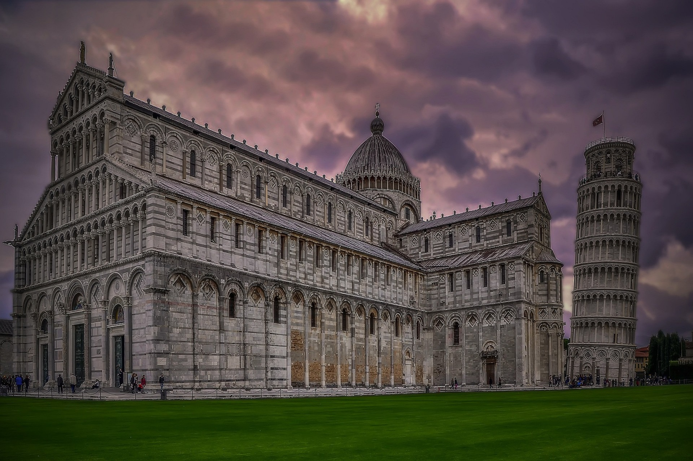
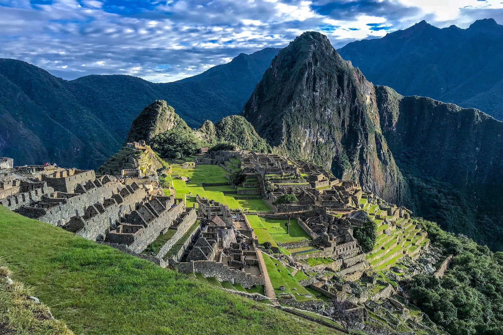

La Torre Eiffel

la Torre Eiffel se convirtió en el principal símbolo de París mas visitado en el mundo,ve y disfruta de un fantastico cambio de ambiente y de energias.
Arquitectura Moderna

Ve y disfruta de la mas novedosa arquitectura moderna donde encontraras la paz interior y un ambiente agradable ,descansa y llena tu vida de recuerdos.
Maravillas Del Mundo

Un cambio de ambiente nos hace bien a todos ¡vive tu vida, descansa y viaja! admira y disfruta de cada una de las maravillas del mundo porque la vida se acaba.
Torre Inclinada De Pisa
La vida debemos verla desde distintas perspectivas y es por ello que es importante visitar este hermoso lugar.
Machu Picchu
Entre las maravillas del mundo cabe mencionar este hermoso paisaje, lugar y conexion con la naturaleza.
Taj Mahal Agra India

Viajemos por todo el mundo y llenemos nuestra vida de recuerdos como este lugar tan bello siendo algo magico e inigualable.